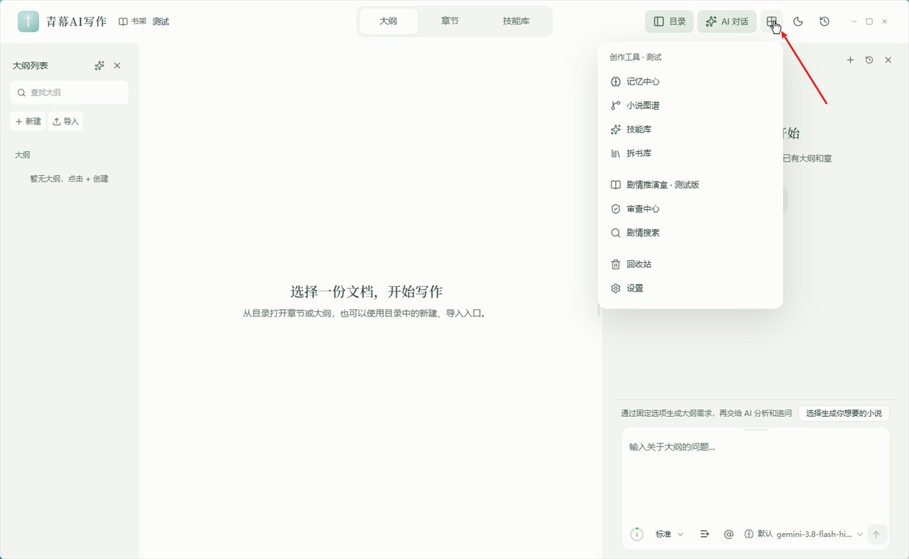
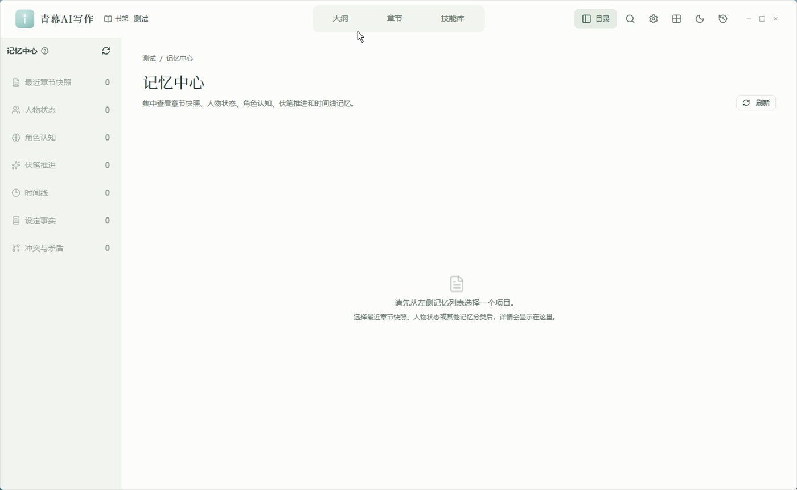
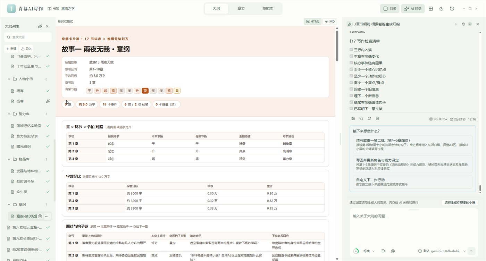
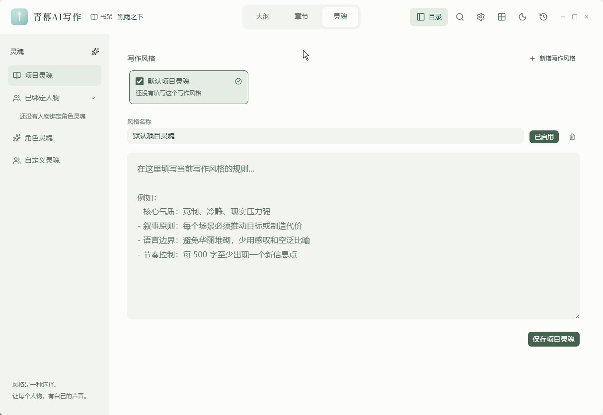
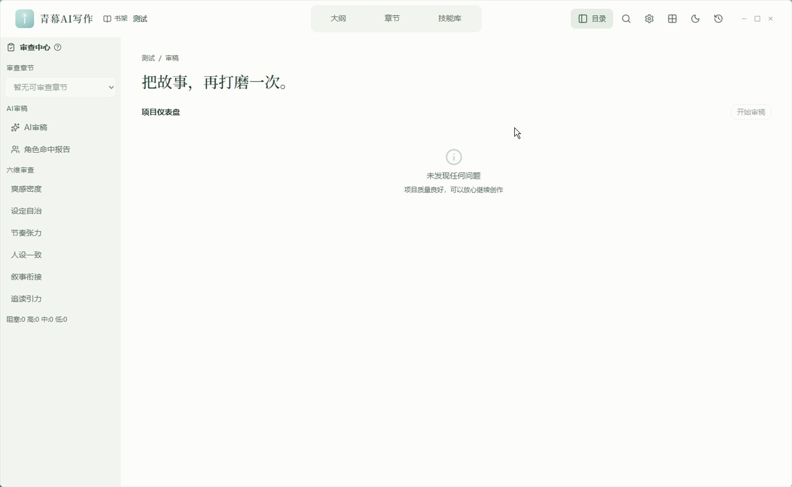
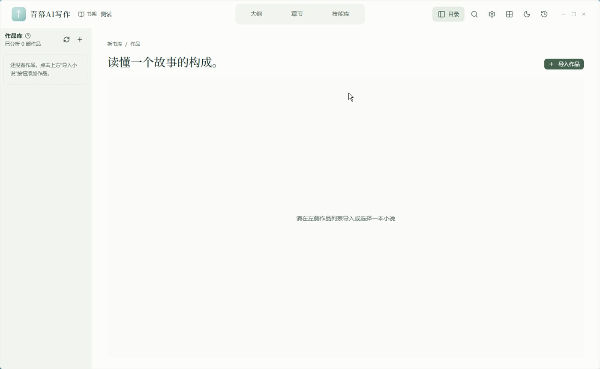
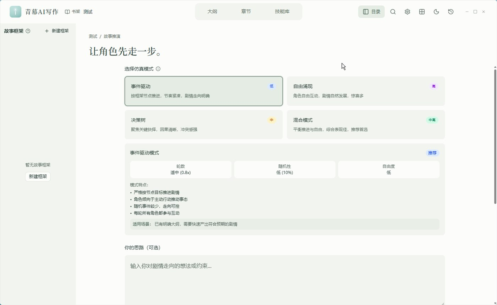
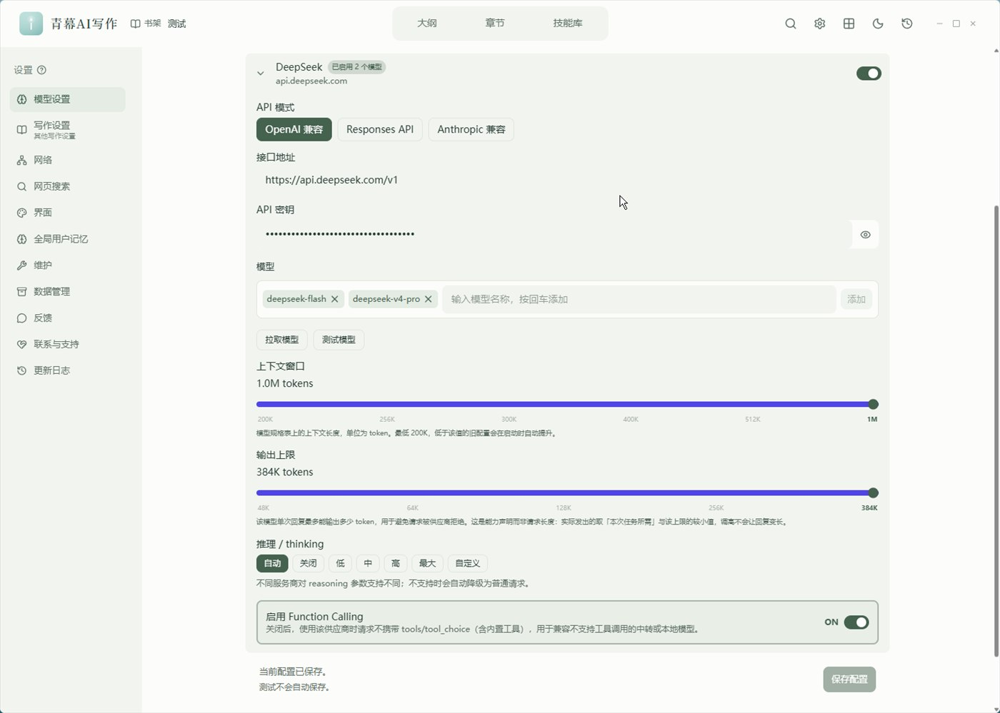

长篇小说写作 · AI 工具
青幕AI写作：写 200 万字长篇小说，AI 写作工具真正该拼的是「记忆」
写到第 87 章，主角推门进去，AI 郑重其事地写他第一次拜见师父——可第 12 章里，这两个人早就反目成仇了。这不是模型不够聪明，是绝大多数 AI写作 工具从设计之初，就没打算陪你写到 200 万字。
一、为什么大部分 AI 写作工具，写不好长篇小说
把大纲丢给 AI，让它一章一章往下写，前 10 章通常很惊艳。从第 30 章开始，问题会集中爆发：
- 遗忘：前面写过的人物、伏笔、约定，模型一概不记得；
- 人设漂移：谨慎多疑的角色开始热血上头，话少的人突然变成话痨；
- 时间线错乱：昨天的伤三天后还在，三年后的信提前寄到；
- 伏笔失踪：埋了 40 章的线索，作者自己都想不起来；
- 角色越界：本该被蒙在鼓里的角色，张口说出了只有读者知道的事；
- AI 味：每一章措辞都像同一个模子刻出来的。
原因很朴素：上下文窗口不等于记忆。再大的窗口也塞不下 300 万字，而聊天式工具里的一切，都会随着新对话被冲掉。说到底，长篇小说写作真正的难点从来不在单章质量，而在几百章之间的一致性。
这正是 青幕AI写作 想解决的问题。它不是又一个套壳聊天框，而是一套面向长篇小说的记忆型 AI 写作桌面系统。
二、青幕是什么：把「记忆」当成核心引擎的 AI 写作工具
青幕AI写作（QMAI）的定位非常明确：为 200 万～300 万字量级的连载小说创作而设计。
它的运行逻辑可以压缩成一句话：
写前自动提取上下文 → 写后自动沉淀章节记忆 → 图谱追踪关系变化 → 审查系统防止崩坏 → 人工确认最终定稿
和「打开网页、粘贴提示词、复制结果」的 AI写作 方式比，青幕AI写作 最大的不同是：它有一套属于这本书的长期记忆。你的大纲、人物、伏笔、时间线、世界观，全部沉淀在项目目录里，越写越厚，而不是越写越乱。
- 项目即资产：所有数据以项目目录形式本地存储，章节正文是 Markdown，快照与状态是 JSON，可导出、可备份、可重建索引；
- 模型自选：内置 DeepSeek、Google、智谱等提供方，也支持 OpenAI 兼容 / Responses API / Anthropic 兼容 / 本地 Ollama，想用哪家就用哪家；
- 开源可查：以 GPL-3.0 开源，代码与更新日志均可追溯。

三、记忆系统：青幕AI写作最硬的一块
每章正式保存后，青幕 会自动执行一次「章节摄取」，把正文结构化成一整套可检索、可追踪的记忆单元：章节摘要与结尾钩子、出场人物与地点组织物品、关键事件与状态变化、人物关系与角色认知变化、伏笔的新增/推进/回收、时间线事件、图谱节点与关系边。
真正决定「AI 记不记得住」的，是写作前的那一步：上下文包自动组装。青幕 按优先级把该给的信息依次装进去：
用户明确指定 > 当前章节细纲 > 上一章结尾 > Canon 正史规则
> 当前人物状态 > 伏笔状态 > 最近章节摘要 > 最近章节正文片段 > 图谱关系
> 向量搜索结果 > 关键词搜索结果这份上下文包还带 token 预算控制，会优先保住关键信息，再按你当前模型的真实输入上限二次裁剪并重试——长章节历史超限不再是一句「上下文窗口不足」了事。
检索层面，青幕 用的是五路混合策略：
| 检索通道 | 作用 |
|---|---|
| 最近章节窗口 | 直接取最近 N 章正文片段（长章节同时保留开头与结尾）+ 摘要 |
| 关键词搜索 | BM25 风格精确匹配，人名、地名、专有名词不跑偏 |
| 向量搜索 | 语义级相似内容，换个说法也能召回 |
| 图谱搜索 | 沿关系边扩展，把「跟他有关的人」一并带进来 |
| Canon 规则 | 强制注入、不可违背的正史设定 |
还有一条容易被忽略但很救命的设计：草稿与正式章节分离。AI 生成的章节默认是草稿，支持预览、编辑、重新生成、审稿；只有你确认后才会入库并触发记忆摄取。也就是说，AI 写歪的内容不会污染后续几百万字的记忆库。

四、大纲不再是一份文档，而是三级推进系统
长篇失控，往往从大纲失控开始。青幕 把大纲拆成三级、逐级细化：
- 总纲：全书主线、核心设定与整体走向；
- 卷纲：按「1 卷 = 10 故事 = 1 大高潮」组织，每个故事固定 10 个环节（起①~合②），可产出可折叠 HTML 树，附带节拍体检、伏笔追踪、人物出场、对手推进、悬念债务、成长资源、地点/组织索引；
- 章纲（细纲）：按故事分批生成，每章写满 17 节——本章定位、核心事件链、必要条件、四段式、情绪曲线、爽点、扩写方式、画面细节、伏笔钩子、角色状态变化、设定更新、写作约束、下一章交接、写作检查清单等。
两个细节很能说明它是不是给长篇做的：双格式保存（Markdown 与可视化 HTML 可分别勾选）与保存前体检（自动校验章号区间、节拍逐位一致、时间线不倒退、人物出场、对手出手、伏笔埋收、检查清单十条固定项；不完整会自动补全一次，并且只重写有问题的批次）。
一个诚实的提醒：大纲生成或导入后，记得点一次「提取记忆」。这一步不做，AI 在写正文时相当于「看不到」你的大纲——这是新用户最容易踩的坑，青幕 在界面里也做了状态提示（待提取记忆 → 正在提取记忆 → 已提取记忆）。

五、人设不崩：项目灵魂 + 角色认知
项目灵魂（Soul Doc） 定义整本书的气质：叙事气质、语言风格、节奏控制、对话规则、心理描写规则、冲突写法、感情线规则，以及一份「禁区列表」（例如禁止空泛抒情、禁止所有人物用同一种说话方式）。它会在每次章节生成时自动注入提示词，保证全书风格统一。
角色视角 则管到每个人：角色档案与核心设定、表达 DNA（说话习惯、用词偏好、句式特征）、思维模式与决策风格、对话历史、时间线关键事件、动机与代表性台词。
最能防崩的是角色认知系统——它追踪每个角色在每个时间节点「知道什么」：
knows：角色已知信息；does_not_know：角色未知信息；reader_knows_but_character_does_not：读者知道、角色不知道的信息差。
这恰好堵住了 AI 写作里最常见、也最出戏的错误：让角色知道了不该知道的事。

六、审查系统：写完不是结束，而是开始
青幕 的审查中心提供六维审查：
| 维度 | 看什么 |
|---|---|
| 爽感密度 | 爽点分布是否合理、密度是否足够 |
| 设定自洽 | 战力、地点、时间线是否自相矛盾 |
| 节奏张力 | 叙事节奏是否合理、张弛是否有度 |
| 人设一致 | 角色行为是否偏离人设、对话是否符合性格 |
| 叙事衔接 | 场景转换是否自然、前后文是否衔接 |
| 追读引力 | 章末钩子是否有力、读者期待管理是否到位 |
审稿意见分级输出为阻塞 / 高 / 中 / 低，并给出具体修改建议与原文证据，而不是一句「写得不错」。配套的还有几套专项检查：
- 角色一致性检查：先提取初稿所有出场角色，再逐个对照记忆库（角色光环、人物状态、角色认知）标注命中状态；长章节（>8000 字）自动分段并行审查（最多 3 段覆盖 24000 字），返修后还有复审闭环；
- 连贯性检查（Lint）：时间线冲突、人设崩坏、伏笔错乱、角色认知越界、缺失的关系引用；
- 事实检查：基于章节快照，检测新章节是否与既有 Canon 正史矛盾；
- 伏笔债务追踪：自动统计长期未回收的伏笔并计算债务评分，提醒你哪些线该推进或收束。
再配合 去 AI 化改写（De-AI），把「标准化」的模型文本改回更像人写的表达。

七、拆文库：把成熟作品的写法变成自己的模板
长篇小说写作最有效的学习方式之一，就是拆书。青幕 的拆文库支持：导入作品（整本 / 多文件 / 指定章节范围）→ 章节自动切分并由 LLM 精准识别真实出场角色 → 一键提取角色 Skill（公开资料、说话风格、表达 DNA、外界看法、决策模式、时间线六维人格分析）→ 一键提取作品文风（叙事密度与节奏、环境描写比重、情绪呈现、句式与句长、比喻与通感密度、场景与时间过渡、叙述视角与声音、对白风格、点题与抒情习惯共 9 维）→ 角色 Skill 加入自定义灵魂库，文风绑定为当前小说的风格约束。
也就是说，你喜欢的作者的文风，可以变成你项目里的一项可复用约束，而不是每次都要手写一长串提示词。

八、图谱与剧情推演：把「关系」看得见
小说图谱把人物、地点、组织、物品、事件、章节、大纲、伏笔、秘密、冲突、时间点全部变成节点，把敌对、合作、怀疑、隐瞒、知道、不知道、推进伏笔、回收伏笔、导致、揭示、影响变成关系边，随正式章节保存增量更新。基于 Sigma.js + ForceAtlas2 布局，支持社区发现、节点过滤与交互探索。
剧情推演室 更进一步：给定一个情境，或注入一个触发事件，用多 Agent 仿真推演各角色的行为选择与连锁反应，直接输出推演报告——用在「这一卷该怎么收」的节点上，比拍脑袋靠谱。

九、写作现场的细节，也都是给长篇准备的
- 同人创作：4.2 起支持，
canon（正典延续）/au（架空世界）/ooc（性格重塑）/cp（CP 向）四种模式加自定义；原作正典存在项目固定路径、整篇注入而非模糊检索——检索可能漏，固定路径不会； - 随包 9 款可商用中文字体：思源宋体、思源黑体、霞鹜文楷、文津宋体、寒蝉正楷体、鸿蒙黑体、得意黑、朱雀仿宋、更纱黑体，装到当前用户，不需要管理员权限；
- 6 项排版参数：正文字体、字号（12–32px）、行间距、字间距、左右边距、底部安全距离，正文字号与界面字号彻底解耦；
- 底部写作字数状态栏：手写与 AI 生成分开计数，删除会同步扣减，数字不虚高；
- 模型分工：可分别指定默认模型、审稿模型、摘要模型、提取模型、去 AI 味模型；自定义模型标签式批量管理，支持批量测试 + 失败重试；
- 数据管理：一键导出 / 导入全部数据（AI 会话、大纲、模型、记忆），换电脑、重装系统可完整恢复；
- 自动更新：内置 Tauri Updater，启动时自动检测 GitHub Releases 新版本。
十、青幕AI写作适合谁
| 你是 | 青幕AI写作 能帮到你什么 |
|---|---|
| 网文日更作者 | 保持长篇连载质量，防止写到后期人设崩坏、伏笔丢失 |
| 小说策划者 | 管理世界观、势力关系与多线剧情，用图谱和推演室梳理结构 |
| AI 辅助写作者 | 让大模型在长篇创作里持续可用，而不是写 20 万字就失效 |
| 学习仿写者 | 通过拆文库拆解成熟作品的角色设定与文风，快速复用 |
| 同人作者 | 用「原作正典」约束既成事实，把「有意改动」和「写崩了」分开 |
十一、三步上手
- 配置模型 → 设置 → 模型设置 → 大语言模型：选内置提供方填 API 密钥，或添加自定义模型（本地 Ollama 填到
/v1为止）；点「测试模型」验证连通，再点「保存配置」； - 新建小说 → 书架 →「+ 新建小说」填名称与存放位置（默认
C:\QM-BOOK），点「创建并写大纲」； - 开写 → 章节里输入「继续写第 30 章」→ 审阅草稿 → 满意后保存为正式章节（自动摄取记忆）→ 在记忆中心、图谱、审查中心复盘。

十二、常见问题（FAQ）
青幕AI写作 是免费的吗？
软件本身以 GPL-3.0 开源发布，可从 GitHub Releases 免费下载；AI 生成能力需要你自己配置大模型 API，费用由你选择的模型服务商收取。若使用本地 Ollama 等本地模型，则可不产生额外 API 费用。
支持哪些大模型？
内置 DeepSeek、Google、智谱等提供方预设，同时支持 OpenAI 兼容接口、Responses API、Anthropic 兼容接口与本地 Ollama，可自定义名称、接口地址与密钥。
为什么大纲写好了，AI 写正文却读不到？
多半是没有提取记忆。打开该大纲，在编辑区右上角点「提取记忆」，状态变为「已提取记忆」后才生效；修改过内容可点「重新提取记忆」更新。
我的稿子会上传到云端吗？
不会。所有数据以项目目录形式本地存储，除调用你配置的 LLM 接口外不联网；也可用「设置 → 数据管理」一键导出或导入全部数据。
能写到多长？
青幕 的设计目标是 200 万～300 万字量级的连载长篇，通过结构化记忆与混合检索让 AI 在每次生成时都能「记住」之前的一切。
支持什么系统？
Windows 10 2004+ / 11（x64，需支持 AVX2 与 WebView2）、macOS 13.0+（仅 Apple Silicon）、Linux（Ubuntu 22.04+ / x86_64，需支持 AVX2）。
能写同人小说吗？
可以。4.2 起同人作为独立创作类型接入，支持正典延续、架空世界、性格重塑、CP 向四种模式，并可按固定路径整篇注入原作正典。
结语：长篇写作拼的不是模型，是系统
用 AI 写短篇，靠的是提示词技巧；用 AI 写长篇，靠的是工程化的记忆与审查。青幕AI写作 的价值，正在于它把「作者最怕丢的东西」——前文、人设、时间线、伏笔、信息差、文风——一件件变成了系统里可检索、可追踪、可审查的资产。
如果你正在写一部几十万字起步的长篇，或者已经被「AI 又忘了」折磨过，值得把青幕 装进你的写作流程里试一次。
下载青幕AI写作
- 📦 下载与版本更新：GitHub Releases
- 🐛 问题反馈：Issues
- 💬 功能建议：新建 Issue